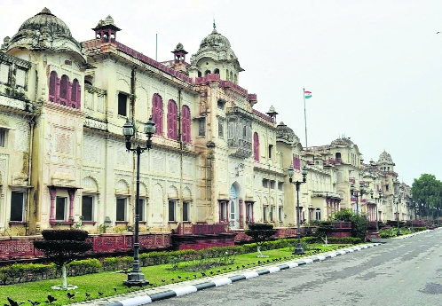

Sporting Venues
Patiala is home to numerous inter-state sporting teams in tournaments like Black Elephants. The city has facilities for cricket, swimming, shooting, skating and hockey. The city has stadiums such as Dhruv Pandove Ground, Raja Bhalinder Stadium, Yadavindra Sports Stadium (YPS) and National Institute of Sports.
The latest addition to sports is the state-of-the-art shotgun shooting ranges housing New Moti Bagh Gun Club at village Maine. Founded by the royal family of Patiala, these ranges are home to the Indian Shotgun Shooting team who routinely trains here. It has recently hosted the 2nd Asian Shotgun Championship.
National Institute of Sports
Founded in 1961, Netaji Subhas National Institute of Sports (NIS) is Asia's largest sports institute in princely city of Patiala. The institute was renamed Netaji Subhas National Institute of Sports in January 1973.
NIS is housed in the Old Moti Bagh palace of the erstwhile royal family of Patiala, which was purchased by the government of India after Indian Independence. Today, several sports memorabilia, like a has (doughnut-shaped exercise disc), weighing 95 kg, used by the Great Gama for squats, Major Dhyan Chand's gold medal, from 1928 Amsterdam Olympics, and PT Usha 1986 Seoul Asiad shoes, are housed at the National Institute of Sports Museum.